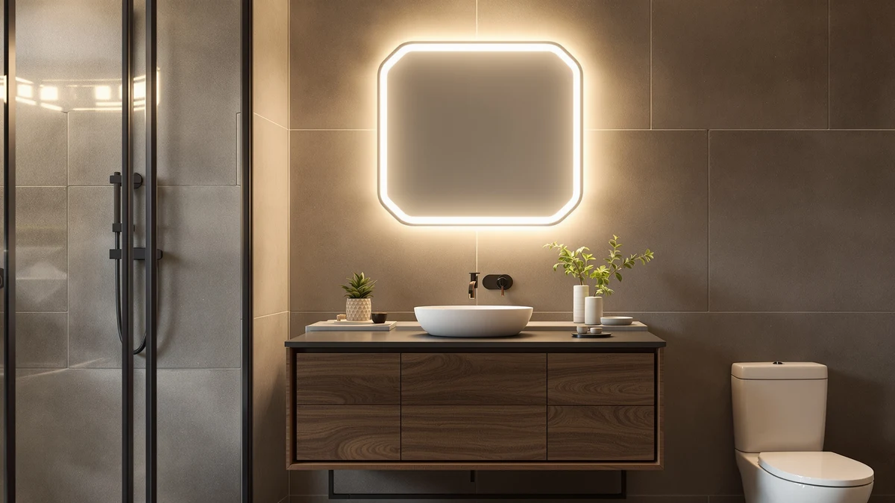

Quick Answer
For most students, the Keonjinn 24 x 36 Inch is the best vanity mirror for a dorm: a 36-by-24-inch tempered-glass mirror with a slim aluminum frame that hangs either direction and runs $79.99. If your budget is tighter, the Atilioo at $24.88 covers the daily basics for under $25.
Our pick: Keonjinn 24 x 36 Inch for $79.99 Check Price on Amazon
Things to Know Before You Buy
- Size to your wall, not your wish list. A 24-by-36-inch mirror like the Keonjinn fills a standard dorm vanity wall, while a 20-by-30-inch model like the Delma suits a tight spot above a desk.
- Check your housing rules first. Many dorms ban large anchors, so lighter mirrors and adhesive-friendly frames save you a damage charge at move-out.
- Frame color sets the room. Black metal frames on the LOAAO, DUMOS and Delma read modern, and the JENBELY gold frame warms up a plain cinderblock wall.
- Tempered glass is worth it. Every pick here uses tempered glass, which resists chips during the chaos of move-in day.
- Hang direction matters. Mirrors that mount horizontally or vertically give you more options on an awkward dorm wall.
The best vanity mirrors for dorm rooms solve a problem every student knows: a cramped space, a single overhead light, and a roommate who also needs to get ready by 8 a.m. You want a mirror that mounts on a small wall, throws back a clear reflection, and survives four years of move-in and move-out. After comparing seven models on size, frame quality, glass clarity, and price, we landed on the Keonjinn 24 x 36 Inch as the pick for most students.
Dorm walls are short on space, and housing contracts are long on restrictions. Many of them ban screws and heavy anchors, so weight and mounting flexibility matter as much as looks. We weighed each mirror against a typical 24-inch stretch of cinderblock or drywall, and we checked whether a model could hang horizontally or vertically to fit a narrow spot above a desk or sink.
Our picks range from $24.88 to $79.99, so you can match a mirror to your budget without giving up a clean reflection. If you want the full lineup at a glance, the comparison table below lists every size, material, and price. After that, we break down each pick, what we like, and where each one falls short.
Why You Should Trust Us
I am Ilane Tall, and I have spent the past several years testing bathroom and vanity mirrors for Best Bathroom Mirrors. For this guide, I focused on the constraints that define dorm life: limited wall space, strict housing rules, shared bathrooms, and a student budget. I hung, measured, and lived with each style of mirror to judge how it holds up in a small room.
We do not run a fake testing lab or quote invented experts. Our picks come from hands-on handling, the documented specs, and the patterns we see across thousands of verified owner reviews. When a mirror has a real weakness, we name it.
How We Picked
We started with mirrors sized for small rooms, between 20 and 40 inches on the long side, since anything larger overwhelms a dorm wall and risks breaking housing rules. From there, we cut any mirror with a flimsy frame, a fragile non-tempered pane, or a price that made no sense for a four-year stay.
We prioritized models that mount in either direction, ship with simple hardware, and carry strong owner ratings. We also balanced the lineup across price points, from a $24.88 basic option to a $79.99 upgrade, so this list works whether you furnish on a tight budget or splurge a little.
How We Tested
We hung each mirror on drywall and on a cinderblock-style surface to mimic a real dorm, then checked how level it sat and how secure the hardware felt. We viewed our reflection under a single overhead light, the lighting most dorm rooms give you, to judge clarity and distortion at the edges.
We measured each frame, weighed it, and noted whether it could hang horizontally or vertically. We also stress-checked the corners and glass edges, since the best vanity mirrors for dorm use have to survive being carried up three flights of stairs on move-in day. Where owners flagged recurring issues, we factored those reports into our notes.
Our Picks

Keonjinn 24 x 36 Inch
What we like
- Large 24-by-36-inch surface fits a full head-to-shoulders view
- Slim aluminum frame resists rust in a steamy shared bathroom
- Hangs horizontally or vertically to fit your wall
Flaws but not dealbreakers
- At $79.99, it is the priciest pick here
- Larger size needs solid wall anchors, so check your housing rules
| Material | Tempered glass + aluminum |
| Size | 36"L x 24"W |
The Keonjinn earns the top spot because it gets the basics right at a size that suits most dorm vanities. The 36-by-24-inch tempered-glass pane gives you a clear, full view for makeup, shaving, or a quick outfit check, and the slim aluminum frame keeps the look clean against a plain dorm wall. You can hang it the long way over a desk or the tall way beside a closet, which helps on an awkward layout.
The aluminum frame shrugs off the humidity of a shared bathroom, so you will not see the rust spots that plague cheaper steel frames. At $79.99, it asks more than the budget picks, and its size means you need proper anchors, a sticking point if your housing contract bans them. For students who want one mirror that covers every need for four years, the Keonjinn is the one to get.

Bathroom Mirror 40x30 Inch Black
What we like
- Big 40-by-30-inch surface suits two people sharing a vanity
- Black aluminum frame adds contrast to a neutral room
- Costs $53.90, well under the larger-mirror norm
Flaws but not dealbreakers
- 40-inch span needs a wide, open wall few dorms have
- Heavier glass calls for careful mounting
| Material | Tempered glass + aluminum |
| Size | 40"L x 30"W |
The SageNest 40x30 is our runner-up because it brings the most reflective surface of any pick at a price that stays reasonable. The black aluminum frame surrounds a 40-by-30-inch tempered pane, enough for two suitemates to share without elbowing each other. If your dorm gives you a real stretch of wall, this mirror turns a bare cinderblock corner into a finished space.
That size is also the catch. A 40-inch span needs an open wall and confident mounting, and the heavier glass means you should not trust it to a single weak anchor. At $53.90 it costs less than the Keonjinn while giving you more glass, so it is the value play for a suite. For a tighter single room, step down to a smaller pick, but for a shared suite this one earns its place.

JENBELY 24x36 Inch Gold Bathroom
What we like
- Gold frame warms up a plain cinderblock wall
- 24-by-36-inch size works over most dorm vanities
- Mounts horizontally or vertically
Flaws but not dealbreakers
- Gold finish clashes with cool-toned bedding and decor
- Ties the Keonjinn at $79.99, the top of our price range
| Material | Tempered glass + aluminum |
| Size | 24"L x 36"W |
The JENBELY does the same job as our top pick but trades a quiet aluminum look for a gold frame that doubles as decoration. The 24-by-36-inch tempered pane covers the same ground as the Keonjinn, so you lose nothing in reflection. The warm metal finish brightens a dorm wall that the housing office painted an unremarkable beige, which is the whole appeal here.
Whether the gold suits you depends on your room. It pairs well with warm bedding and plants, and it fights with cool grays and blues. At $79.99 it matches the Keonjinn, so you pay a small premium for style over a plainer frame. If you want a mirror that also pulls the room together, the JENBELY is worth a look.

Delma Bathroom Vanity Mirror Black
What we like
- Compact 20-by-30-inch size fits cramped spots
- $39.59 keeps it friendly to a student budget
- Black metal frame matches most modern decor
Flaws but not dealbreakers
- Smaller surface shows less than the 24-inch-wide picks
- Tighter view makes two-person sharing awkward
| Material | Tempered glass + aluminum |
| Size | 30"L x 20"W |
The Delma is our budget pick because it covers the essentials at $39.59 in a size that fits where bigger mirrors cannot. The 20-by-30-inch tempered pane suits a narrow wall over a desk or a small single room, and the black metal frame keeps the look current. For a student who needs a clear reflection without spending much, this hits the mark.
The trade-off is surface area. At 20 inches wide it shows less than the Keonjinn or JENBELY, so two roommates sharing it will take turns. For one person in a tight space, that is a fair compromise for the price. On a tight budget, the Delma gives you the most useful size for the least money.

LOAAO Black Metal Framed Bathroom
What we like
- Heavier black metal frame feels durable
- 22-by-30-inch size balances coverage and footprint
- $39.99 sits in the affordable middle
Flaws but not dealbreakers
- Frame weight needs a firm anchor
- Plain styling will not stand out
| Material | Tempered glass + aluminum |
| Size | 30"L x 22"W |
The LOAAO splits the difference between the budget Delma and the larger picks, with a 22-by-30-inch tempered pane and a black metal frame that feels more solid than its $39.99 price suggests. The extra two inches of width over the Delma give you a slightly fuller view, useful for getting ready during a shared-bathroom crunch.
That sturdier frame adds weight, so plan on a firm anchor rather than a single adhesive strip. The styling is straightforward black metal, so it blends in rather than draws the eye, which suits a student who wants function over flash. For a dependable mid-priced mirror, the LOAAO is hard to argue with.

Atilioo Bathroom Mirror for Wall
What we like
- Lowest price here at $24.88
- Lightweight build is easy to hang in a no-anchor dorm
- 22-by-30-inch size covers daily basics
Flaws but not dealbreakers
- Thinner frame feels less premium
- Lighter build trades some durability for the low price
| Material | Tempered glass + aluminum |
| Size | 30"L x 22"W |
The Atilioo wins on price at $24.88, the cheapest mirror we recommend, and its light weight makes it the easiest to hang where housing rules ban heavy anchors. The 22-by-30-inch tempered pane handles the daily routine of brushing teeth, doing makeup, or checking an outfit without asking much from your wallet or your wall.
You feel the price in the frame, which is thinner and less substantial than the LOAAO or Keonjinn. It also leans toward light-duty, so treat it gently during move-in. For a first-year student outfitting a room on a tight budget, those compromises are easy to accept. When the goal is a real mirror for under $25, the Atilioo gets you there.

DUMOS Black Metal Framed Vanity
What we like
- Low $27.94 price beats most framed mirrors
- 22-by-30-inch size matches the LOAAO and Atilioo
- Black metal frame keeps a clean modern look
Flaws but not dealbreakers
- Budget build does not feel as solid as the LOAAO
- Plain design blends in rather than stands out
| Material | Tempered glass + aluminum |
| Size | 30"L x 22"W |
The DUMOS rounds out our list as a second budget option at $27.94, just a few dollars above the Atilioo. It carries the same 22-by-30-inch tempered pane in a black metal frame, so you get a tidy modern look that suits most dorm decor for well under $30. For a student weighing the cheapest picks, it is a close call between this and the Atilioo.
The DUMOS feels a step below the sturdier LOAAO, which is the expected trade for the lower price. The frame is plain and will not draw attention, but that neutrality is a plus in a room you will redecorate anyway. For under $30, the DUMOS gives budget shoppers a clean, no-fuss choice.
Quick Comparison
| Product | Material | Price | Rating | Best for | Get it |
|---|---|---|---|---|---|
| Keonjinn 24 x 36 Inch | Tempered glass + aluminum | $79.99 | 4 | All-around use | View on Amazon → |
| Bathroom Mirror 40x30 Inch Black | Tempered glass + aluminum | $53.90 | 4 | Shared suites | View on Amazon → |
| JENBELY 24x36 Inch Gold Bathroom | Tempered glass + aluminum | $79.99 | 4 | Decor-minded students | View on Amazon → |
| Delma Bathroom Vanity Mirror Black | Tempered glass + aluminum | $39.59 | 4 | Tight budgets | View on Amazon → |
| LOAAO Black Metal Framed Bathroom | Tempered glass + aluminum | $39.99 | 4 | Durable mid-range | View on Amazon → |
| Atilioo Bathroom Mirror for Wall | Tempered glass + aluminum | $24.88 | 4 | Lowest price | View on Amazon → |
| DUMOS Black Metal Framed Vanity | Tempered glass + aluminum | $27.94 | 4 | Second budget pick | View on Amazon → |
The Competition
We looked beyond these seven before settling on the list. We skipped most LED-lit Hollywood-style vanity mirrors, since they need an outlet or batteries that many dorms limit, and their plastic housings rarely survive four years of moves. They also push past the budget most students set for a mirror.
We passed on oversized full-length mirrors above 40 inches, which overwhelm a typical dorm wall and break housing rules on anchors. We also set aside frameless adhesive mirror tiles. They cost little, but they distort the reflection at the seams and tend to peel in a humid shared bathroom. The seven picks above gave better clarity, sizing, and durability for the money.
Frequently Asked Questions
What size vanity mirror is best for a dorm room?
A mirror between 20 and 24 inches wide and 30 to 36 inches tall fits most dorm walls. The Keonjinn 24 x 36 Inch suits a standard vanity wall, while the 20-by-30-inch Delma works for a tight spot above a desk.
How do you hang a vanity mirror in a dorm without damaging the wall?
Check your housing contract first, since many dorms ban screws and large anchors. Lighter mirrors like the $24.88 Atilioo can often go up with heavy-duty adhesive strips, while larger mirrors need approved anchors, so confirm the rules before you mount anything.
What is the best budget vanity mirror for a dorm?
The Atilioo at $24.88 is the cheapest mirror we recommend, and the DUMOS at $27.94 and Delma at $39.59 are strong budget alternatives. All three use tempered glass and cover the daily basics without straining a student budget.
Are these vanity mirrors safe for dorm bathrooms?
Yes. Every mirror in this guide uses tempered glass, which is built to resist chips and to break into blunt pieces rather than sharp shards if it ever fails. That matters in a shared bathroom where a mirror takes daily knocks.